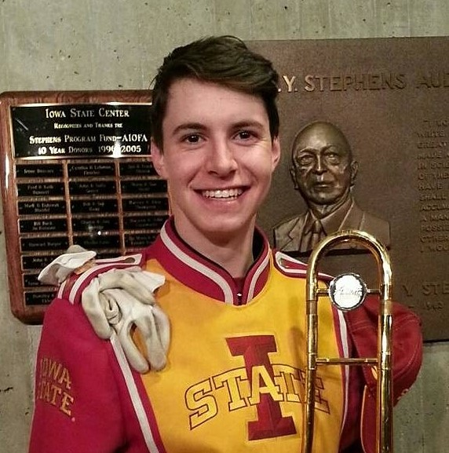

Biography

My name is Joshua Beck, I am a senior at Iowa State University,
pursuing a bachelor's degree in Mechanical Engineering with a minor
in Computer Science. I describe my work style as passionate and
driven, with an emphasis on learning and professional development.
I am outgoing, social, and consider leading by example as a member of a
team, rather than the leader, to be one of my greatest strengths.
My professional skillset is based in problem solving, with software and
mechanical engineering being the two facets for that skillset to shine. I
am a strong developer in languages such as Java and Matlab, and have the
diversity to learn almost any new program you can throw at me
(I learned html and css to make this website!). This coding proficiency
is backed by learning in both classroom and business settings, where I
have worked on b2b platforms, optimizing algorithms and embedded controllers.
In addition to software, I have developed a strong background in Mechanical design including
CAD modeling in two major CAD programs, and participating in multiple large,
team-based design projects through my classes at Iowa State.
Outside of class and work, I participate in many activities, including
playing trombone in multiple bands at Iowa State, solving Rubik's cubes competively,
and leading a Christian small group with Salt company. For more information
on my work experience, projects, activities, or leadership, feel free to check
out the rest of my website!